| Supercoiled DNA molecules are remarkably
uniform in many respects; the characteristic form is
illustrated in Figure 23-21. Supercoils are right-handed
in a negatively supercoiled DNA molecule (Fig. 23-16).
Supercoiled DNA also tends to be extended and narrow
rather than compacted, and it often exhibits multiple
branches. At superhelical densities normally encountered
in cells, the length of the supercoil axis, including
branches, is about 40% the length of the DNA itsel?This
type of supercoiling is referred to as plectonemic (from
the Greek plektos, "twisted," and nema,
"thread") supercoiling. Figure 23-21 (a) An electron micrograph of plectonemically supercoiled plasmid DNA with (b) an interpretation of the observed structure. The blue lines define the axis of the supercoil. Note the branching of this molecule. (c) An idealized representation of this structure. |
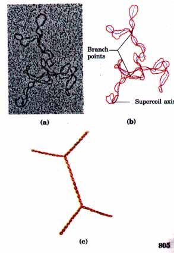 |
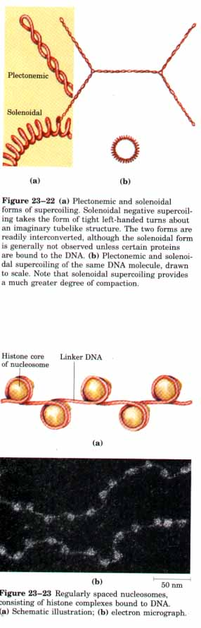 |
Although plectonemic coiling is the form observed in underwound DNAs in solution, it does not give the compaction required to package DNA in the cell. A second form of supercoiling, called solenoidal supercoiling (Fig. 23-22), can be adopted by an underwound DNA. Instead of the extended right-handed supercoils characteristic of the plectonemic form, solenoidal supercoiling involves tighter, left-handed turns. The structure is similar to that taken up by a garden hose neatly wrapped on a reel. Although their structures are dramatically different, plectonemic and solenoidal supercoiling represent two forms of negative supercoiling that can be taken up by the same underwound DNA. The two forms are readily interconvertible. Although the plectonemic form is more stable in solution, the solenoidal form can be stabilized by protein binding and is the form found in chromatin. It provides a much greater degree of compaction (Fig. 23-22b). Solenoidal supercoiling explains how underwinding contributes to actual DNA compaction. Chromatin and Nucleoid StructureThe term chromosome today refers to the nucleic acid molecule that is the repository of the genetic information of a virus, a bacterium, a eukaryotic cell, or an organelle. But the word chromosome was originally used in another sense, to refer to the densely colored bodies in eukaryotic nuclei that can be visualized with the light microscope after the cells are stained with a dye. Eukaryotic chromosomes, in the original sense of the word, appear as sharply defined bodies in the nucleus during the period just before and during mitosis, the process of nuclear division in somatic cells (see Fig. 2-14). In nondividing eukaryotic cells, the chromosomal material, called chromatin, is amorphous and appears to be randomly dispersed throughout the nucleus. But when the cells prepare to divide, the chromatin condenses and assembles itself into a species-specific number of well-defined chromosomes (see Fig. 23-4). |
Chromatin has been isolated and analyzed. It consists of fibers that contain protein and DNA in approximately equal masses, plus a small amount of RNA. The DNA in the chromatin is very tightly associated with proteins called histones, which package and order the DNA into structural units called nucleosomes (Fig. 23-23). Also found in chromatin are many nonhistone proteins, some of which regulate the expression of specific genes (Chapter 27). Beginning with nucleosomes, eukaryotic chromosomal DNA is packaged into a succession of higherorder structures that ultimately yield the compact chromosome seen with the light microscope. We now turn to a description of this structure in eukaryotes, and compare the DNA packaging in bacterial cells.
Found in the chromatin of all eukaryotic cells, histones have molecular weights of between 11,000 and 21,000 and are very rich in the basic amino acids arginine and lysine (together these make up about onefourth of the amino acid residues). Five major classes of histones are found in all eukaryotic cells, differing in molecular weight and amino acid composition (Table 23-3). The H3 histones are nearly identical in amino acid sequence in all eukaryotes, as are the H4 histones, suggesting strict conservation of their functions. Comparing the 102 amino acid H4 histones, for example, only two differences are found in the H4 molecules of peas and cows, and only eight differences in those of humans and yeast. Histones Hl, H2A, and H2B show a lesser degree of sequence homology between eukaryotic species.
Each of the histones can exist in different forms because certain amino acid side chains are enzymatically modified by methylation, ADP-ribosylation, phosphorylation, or acetylation. Such modifications change the histone molecules' net electric charge, shape, and other properties, but the funetional significance of the changes is not well understood.
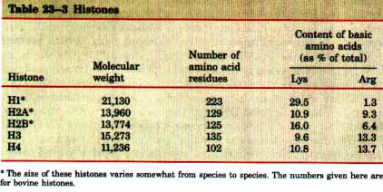
The eukaryotic chromosome depicted in Figure 23-4 represents the compaction of a DNA molecule about 10~ ~tm long into a cell nucleus that is typically 5 to 10 p,m in diameter. This compaction involves several layers of highly organized folding. Subjecting chromosomes to treatments that partially unfold them reveals a structure in which the DNA is bound tightly to beads of protein that are often regularly spaced (Fig. 23-23). The "beads" in this "beads- on- a- string" arrangement are complexes of histones and DNA called nucleosomes. They are the fundamental units of organization upon which the higher-order packing of chromatin is built. Each nucleosome contains eight histone molecules, two copies each of H2A, H2B, H3, and H4. The spacing of the nucleosome beads along the DNA deimes a repeating unit typically of about 200 base pairs, of which 146 base pairs are bound tightly around the histone core and the remainder serve as a linker between nucleosomes. Histone Hl is not part of the nucleosome core, but it is generally bound to the linker DNA. When chromatin is treated with enzymes that digest DNA, the linker DNA is degraded, releasing nucleosome particles. Each particle contains 146 base pairs of bound DNA that are protected from digestion. Nucleosomes obtained in this way have been crystallized and studied by x-ray diffraction analysis. This has revealed a particle made up of the eight histone molecules, with the DNA wrapped around it in the form of a left-handed solenoidal supercoil (Fig. 23-24). |
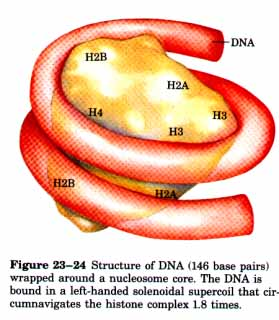 |
A close inspection of this structure can explain why eukaryotic DNA is underwound even though eukaryotic cells lack enzymes that underwind DNA. Recall that the solenoidal wrapping of DNA seen in nucleosomes is one form taken up by underwound (negatively super coiled) DNA. Wrapping DNA tightly around histone cores in nucleosome particles (Fig. 23-24) requires the removal of about one helical turn in the DNA to accommodate the tight turns. When the protein core of a nucleosome binds in vitro to a relaxed, closed-circular DNA, the binding will introduce a negative supercoil. This binding process does not break the DNA or change the linking number, however, so that formation of a negative solenoidal supercoil must be accompanied by a compensatory unbound positive supercoil elsewhere in the DNA (Fig. 23-25). The eukaryotic topoisomerases, unlike the bacterial DNA gyrase, cannot underwind DNA but they can relax positive supercoils. Relaxing the unbound positive supercoil leaves the negative supercoil fixed by virtue of nucleosome binding, and results in a net decrease in linking number. Not surprisingly, topoisomerases have proved necessary for assembling chromatin from histones and intact circular DNA in a test tube. |
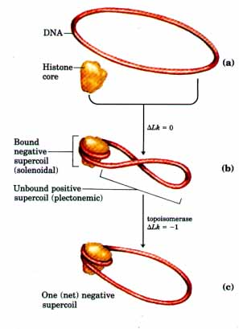 Figure 23-25 (a) Chromatin assembly on relaxed, closed-circular DNA. (b) Binding of a histone core to form a nucleosome will induce one negative supercoil; but in the absence of any strand breaks, a positive supercoil must also form elsewhere in the DNA (Δlk = 0). (c) Relaxation of this positive supercoil by cellular topoisomerases leaves one net negative supercoil (Δlk = -1). |
| Another factor important in the binding of DNA to histones in nucleosomes is the sequence of the bound DNA. The histone cores do not bind randomly to the DNA, but nucleosomes tend to position themselves at certain locations. This positioning is not understood in all cases, but part of the explanation appears to be that nucleosomes form where A=T base pairs are abundant wherever the minor groove of the DNA helix (see p. 334) contacts the nucleosome core (Fig. 23-26). The tight wrapping of the DNA around the protein core requires compression of the minor groove at these points, and a cluster of two or three A=T base pairs makes this compression easier. | 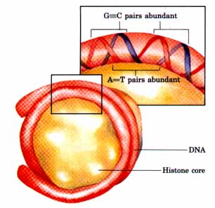 Figure 23-26 The positioning of a nucleosome to make optimal use of A=T base pairs where the histone core is in contact with the minor groove of the DNA. |
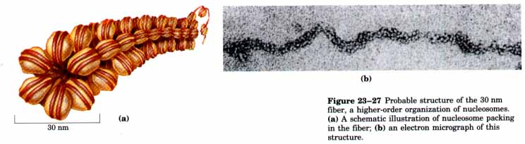
| Wrapping DNA about a nucleosome core compacts it about sevenfold. The total compaction in a chromosome is greater than 10,000-fold, which in itself provides ample evidence for even higher orders of structural organization. In chromosomes isolated by very gentle methods, nucleosomes themselves appear to be organized to form a structure called simply a 30 nm fiber (Fig. 23-27). Packing requires one molecule of histone Hl per nucleosome, although it is unclear where the Hl is bound. Organization into 30 nm fibers does not extend over the entire chromosome, but is punctuated by regions that are bound by sequence-specific (nonhistone) DNA-binding proteins. The structure observed also appears to depend on the transcriptional activity of the particular region of DNA. Regions containing genes that are being transcribed are apparently in a less-ordered state that contains little, if any, histone Hl. | 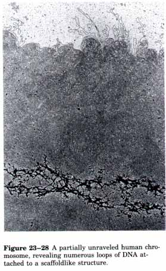 |
The 30 nm fibers provide an approximately 100-fold compaction of the DNA. The next level of folding is not yet understood, but it appears that certain regions of the DNA associate with a nuclear scaffold (Fig. 23-28). The scaffold-associated regions are separated by loops of DNA with perhaps 20,000 to 100,000 base pairs. The DNA in these loops may contain a set of related genes. For example, in Drosophila, complete sets of histone-coding genes seem to be clustered together in loops that are bounded by scaffold attachment sites (Fig. 23-29). The scaf fold itself appears to contain several proteins, notably large amounts of histone Hl and topoisomerase II. The presence of topoisomerase II further emphasizes the important relationship between DNA underwinding and chromatin assembly. Evidence exists for additional layers of organization in eukaryotic chromosomes, each enhancing the degree of compaction multiplicatively. One model for this is illustrated in Figure 23-30. The principle is straightforward: DNA compaction in eukaryotic chromosomes is likely to involve coils upon coils upon coils. . . |
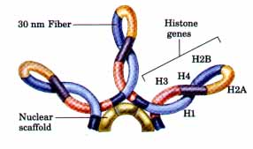 Figure 23-29 A schematic illustration of loops of chromosomal DNA attached to a nuclear scaffold. The DNA in the loops is packaged as 30 nm fibers, so that the loops represent the next level of organization. Within loops there are often groups of genes with related functions. Complete sets of histonecoding genes, as shown here, appear to be clustered in loops of this kind. Unlike most genes, all of the histone genes occur in multiple copies in the genomes of many eukaryotes. |
We now turn briefly to the structure of bacterial chromosomes. Bacterial DNA is compacted in a structure called the nucleoid, which occupies a large fraction of the bacterial cell's volume (Fig. 23-31). The DNA of bacterial cells appears to be attached at one or more points to the inner surface of the plasma membrane. Much less is known about the structure of the nucleoid than of eukaryotic chromatin. In E. coli, a scaffoldlike structure appears to exist that organizes the circular chromosome into a series of looped domains, as described above for chromatin. The local organization provided by nucleosomes in eukaryotes does not seem to be duplicated by any comparable structure in bacterial DNA. Histonelike proteins are abundant in E. coli, and the bestcharacterized example is a protein with two subunits called HU (Mr 19,000). However, these proteins bind and dissociate on a time scale of minutes, and no regular, stable structure has been found. The bacterial chromosome is a relatively dynamic structure, possibly reflecting a requirement for more ready access to the genetic information it contains. The bacterial cell division cycle can be as short as 15 min, whereas a typical eukaryotic cell may not divide for many months. In addition, structural genes account for a much greater fraction of prokaryotic DNA, and high rates of cellular metabolism in bacteria mean that a much higher proportion of the DNA is being transcribed or replicated at a given time than in most eukaryotic cells. With this overview of the complexity of DNA structure, we are now ready to turn to a discussion of DNA metabolism. |
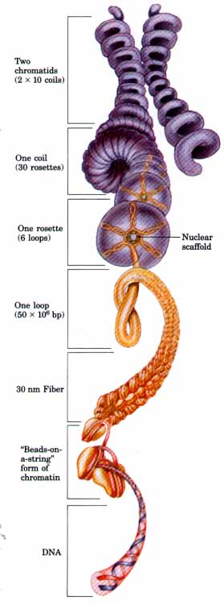 Figure 23-30 A model for layers of organization in a eukaryotic chromosome. The layers take the form of coils upon coils. |
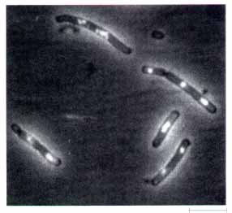 |
Figure 23-31 E. coli cells. The DNA is stained with a dye that fluoresces when exposed to LTV light. The light area defines the nucleoid. Note that some cells have replicated their DNA but have not yet undergone cell division, and hence have multiple nucleoids. |